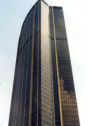

|
 |
Transl. Christian Souchon 01.01.2005 (c) (r) All rights reserved |
Note :
Ce monologue intérieur fait par son contenu (déambulation dans les rues d'une grande cité, combinée avec des allusions à l'Odyssée - Circé...) et sa forme (cheminement de la pensée consciente, parodie, jeux de mots...) explicitement référence à l'"Ulysse" de James Joyce. Le monologue de Molly Bloom est évoqué dans le dernier vers, après un hommage à Gérard de Nerval qui situe la fin de l'odyssée près des Halles dans l'ancienne rue de la Vieille Lanterne.
Les calembours (ô vide/Ovide, murs leurres/hurleurs, priape/prière) s'avèrent rétifs à toute traduction.
This inward monologue explicitly refers by its content (wandering along the streets of a big city combined with allusions to the Odyssey - Circe...) and its form (stream of consciousness, parody, puns...) to "Ulysses" by James Joyce. Molly Bloom's monologue is evoked in the last line, following a tribute paid to Gérard de Nerval, thus situating the journey's end near the former Old Lantern Street in the Halles district.
The French text contains puns that resist translation